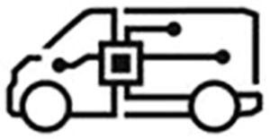

Trade Mark Journal No.2025/046 14 November 2025
WO0000001882689 (9,12)
Office of origin: France
Date of International Registration:6 June 2025
Date of designation in the UK:
6 June 2025

International priority date claimed: 10 December 2024
(France)
(5104682)
- Class 9
- Scientific, nautical, surveying, photographic, cinematographic, optical, weighing, measuring, signaling, checking, emergency (rescue) and teaching apparatus and instruments for land vehicles, as far as the above-mentioned products are included in this class; navigation apparatus for vehicles; electrical and optical navigation instruments; laser devices and sensors for measuring distance to objects; laser and sensor object detectors intended for use in vehicles; Light detection and ranging [LIDAR] equipment; electric ultrasonic, radar, optical and proximity sensors and sensors for object environment detection; sensor and laser measurement technology, in the context of systems for autonomous vehicles; radar equipment for autonomous vehicles; sensor systems for autonomous vehicles, namely navigation detectors and vehicle environment detection sensors; apparatus and instruments for conducting, switching, transforming, accumulating, regulating or controlling electricity; batteries for electric vehicles; electric cable housings; materials for electricity networks [wires, cables]; electric charging cables for electric utility vehicles of all kinds; battery chargers for electric land vehicles of all kinds; charging stations for electric land vehicles of all kinds; electric sockets, including reinforced electric sockets, for charging electric land vehicles of all kinds; prepaid or rechargeable payment cards enabling users to access public charging stations for electric land vehicles of all kinds; electric meters for electricity consumed when charging electric land vehicles; software applications for automatic vehicle steering control; automatic steering apparatus for vehicles, namely computer hardware and vehicle steering control software; apparatus for recording, transmitting and reproducing sound and images; computer hardware for data processing; software for autonomous vehicle control; software for autonomous vehicle navigation; artificial intelligence software for driverless vehicles; software for driving driverless vehicles; software for vehicle environment navigation and detection as part of systems for autonomous vehicles; computer applications (software) for rental of vehicles with or without driver, for carpooling trips and for parking, vehicle storage and mobility as a service (MaaS) services; interfaces (software), all these products relating to mobility services (transport); computer programs and software for collecting, compiling, processing, transmitting and disseminating global positioning system (GPS) data for fixed, mobile and portable devices; electronic databases containing information on the state of roads, geographical information, information relating to maps, information relating to public transport, information relating to public transport routes; navigation software for calculating and displaying routes; artificial intelligence software for vehicles; software for assisted vehicle control; software for assistance in the management of a fleet of vehicles; software for assistance in planning and coordination of autonomous vehicles; software enabling the position of a vehicle to be determined; software for planning, integrating and optimizing smart city applications; Electronic toll collection [ETC] systems; software applications for automated vehicle parking control; software for managing the transport of merchandise by autonomous trucks and vehicles; computer hardware; logistics software; software for managing a fleet of vehicles; software for coordinating, planning, booking and dispatching vehicles for the transport of passengers and merchandise; applications for mobile telephones, for tablets, enabling the consultation and monitoring of electricity consumption relating to charging electric land vehicles, locating electric land vehicle charging stations, access to the after-sales service (maintenance, servicing and repair) for batteries and charging cables for electric land vehicles.
- Class 12
- Vehicles, apparatus for locomotion by land, automobiles, their component parts, namely suspension shock absorbers for vehicles; shock absorbers for automobiles; headrests for vehicle seats; transmission shafts for land vehicles; gear boxes for land vehicles; hoods for vehicles; automobile hoods; engine hoods for vehicles; automobile bodies; safety belts for vehicle seats; automobile chassis; hydraulic circuits for vehicles; air bags [safety devices for automobiles]; brake disks for vehicles; clutches for land vehicles; hub caps; windshield wipers; vehicle brakes; vehicle wheel rims; vehicle running boards; engines for land vehicles; windshields; bumpers for automobiles; tires; luggage carriers for vehicles; doors for vehicles; vehicle wheels; rearview mirrors; vehicle seats; windows for vehicles; steering wheels for vehicles; vehicle covers [shaped].
FLEXIS
Representative: Madame DAUBIN Béatrice CABINET LAVOIX, 62 rue de Bonnel, F-69448 LYON CEDEX 03, FRANCE